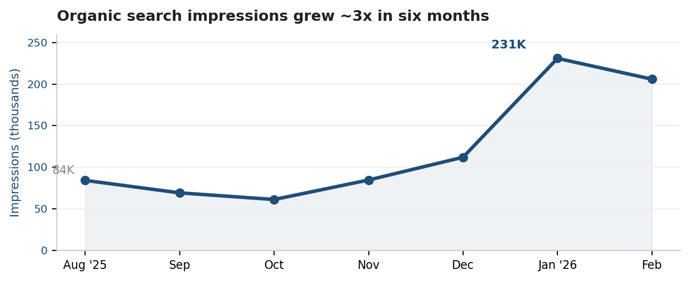

Multi-city DJ & events company · Western Canada
~60% lower cost-per-lead and 3x organic for a multi-region events brand
Owning the full journey from first ad click to the finished event.
Role: Marketing Lead (2020–present)
Events Manager (mid-2025–present)
BC · AB · Toronto · Winnipeg
~60%
lower cost per lead
3x
organic search
#1
local map-pack
110–150
events / year
Problem & context
Bookings leaned on referrals and ad-hoc marketing, with no clear view of what each lead or booking cost across multiple regions (BC, Alberta, Toronto, and Winnipeg) — now focused primarily on BC.
My role
Marketing Lead (2020–present) and Events Manager (mid-2025–present), owning the full journey from first ad click to the finished event — marketing, sales enablement, operations, and delivery.
Process & approach
- Demand generation: built the website and city service pages across every region for constant organic lead flow, ran retargeting ads to capture and follow organic leads around the web, and set up Google Business Profiles for local map visibility.
- Full-funnel ownership: built email and SMS campaigns that prequalify each lead and book a call with sales, sent the music plan (quote) after the call, then onboarded closed clients to the DJ events portal and managed DJ-and-client communication through to the event.
- Supply side: ran nationwide DJ hiring campaigns to grow the roster of independent DJs feeding delivery capacity.

Outcome & results
- Cut blended cost-per-lead ~60% (to $14.60) across 600–850 annual leads, with lead quality strong enough for sales to hold a 17%+ close rate.
- Grew organic search ~3x: 84K → 231K monthly impressions and ~520 → 1,550 monthly clicks, with #1 local map-pack rankings across core service keywords.
- Ran 3 nationwide DJ hiring campaigns; the most recent generated 13 applicant leads at $17.67 each on a lean $5/day budget.
- Delivers 110–150 events a year end to end, representing $160K–$234K in annual booked revenue.
One person owning marketing, sales enablement, operations, and delivery meant no handoff got dropped — the same system that generated a lead also delivered the event it booked.